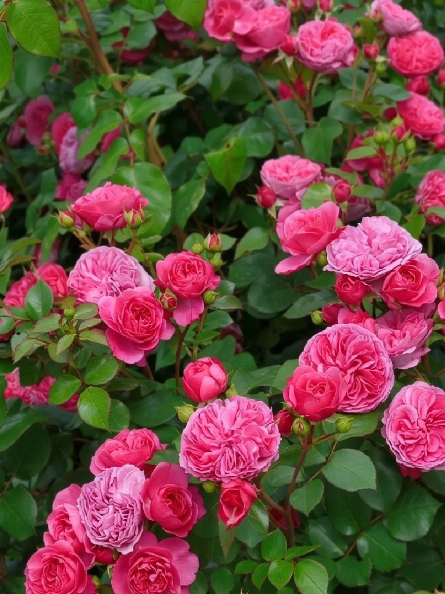
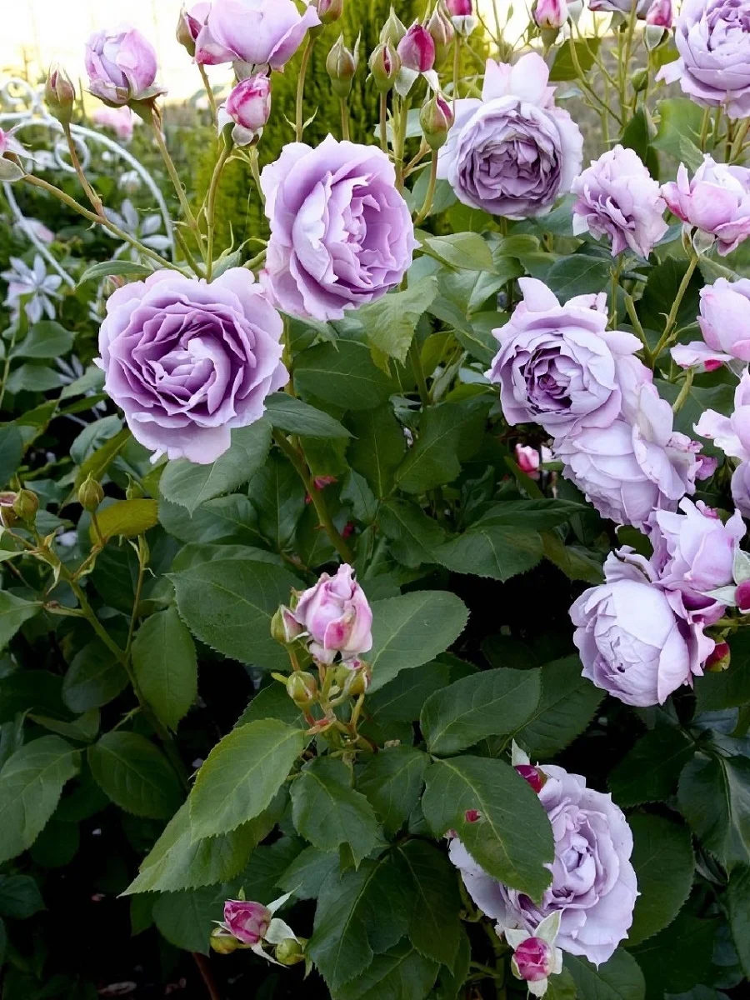
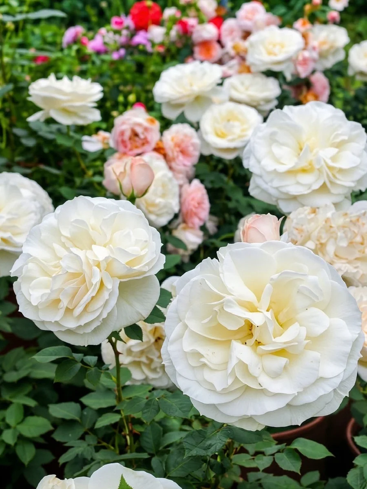
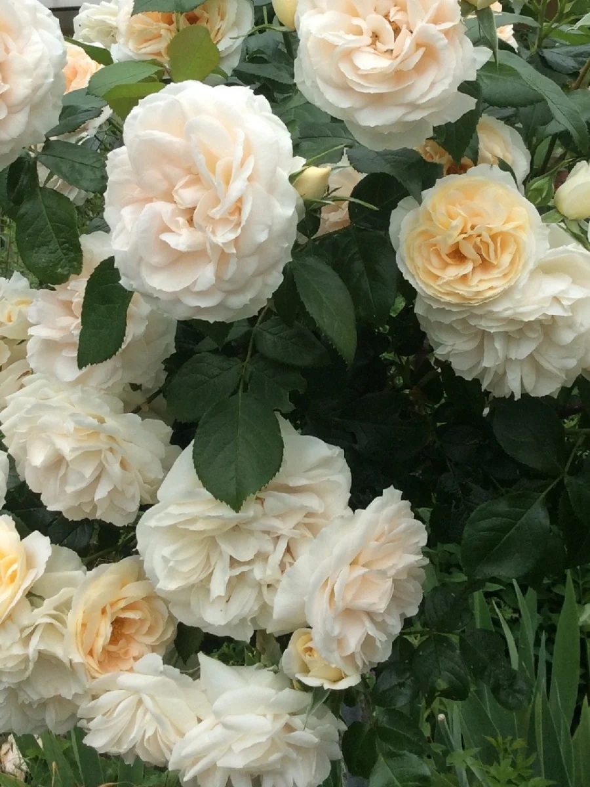
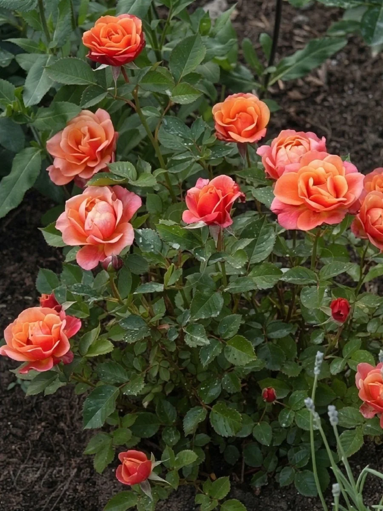
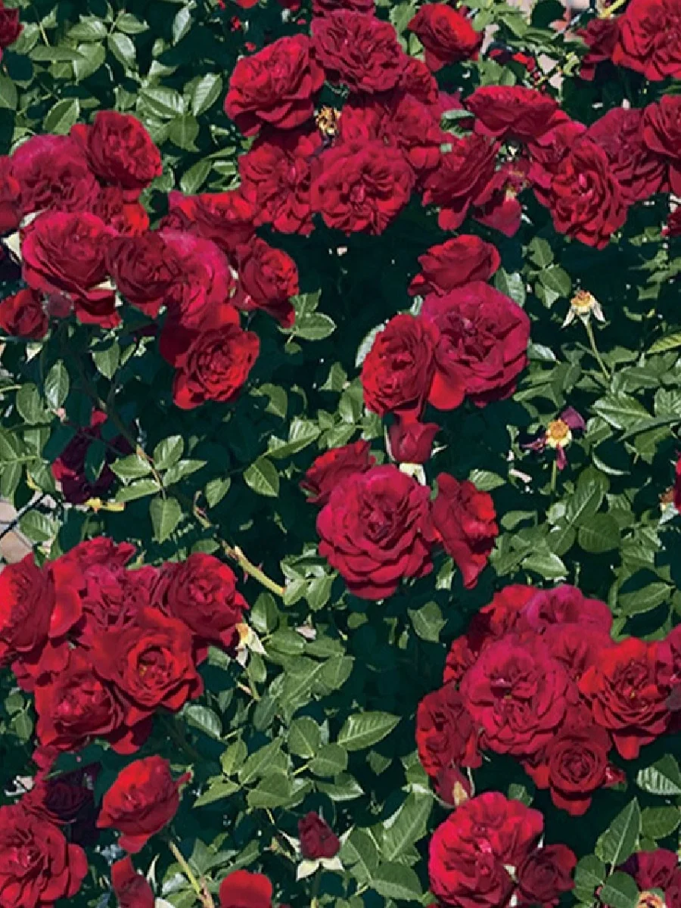
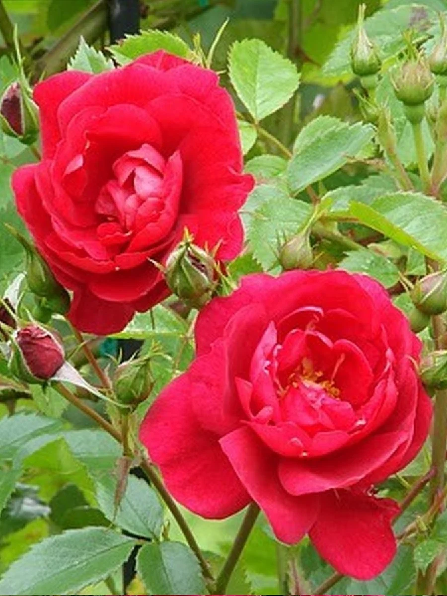

Цель проекта
Показать умение создавать многостраничные сайты с динамическим контентом, работой с данными, фильтрацией, поиском, сортировкой, управлением состоянием через localStorage и адаптивной вёрсткой.
Pet-project · 2026
Интерактивный каталог роз с фильтрацией по ключевым параметрам, отзывы садоводов и профессиональная онлайн-поддержка.
Показать умение создавать многостраничные сайты с динамическим контентом, работой с данными, фильтрацией, поиском, сортировкой, управлением состоянием через localStorage и адаптивной вёрсткой.
HTML5 — семантическая разметка CSS3 — flexbox, grid, медиа-запросы, CSS-переменные JavaScript (ES6+) — DOM, массивы, URLSearchParams localStorage — сохранение избранного Git + GitHub Pages
Слайдер на главной с автопрокруткой Каталог с фильтрацией, поиском и сортировкой Динамические страницы сортов по URL-параметрам Мини-галерея с переключением фото Избранное через localStorage Адаптивная вёрстка + бургер-меню
Каталог сортов роз с фильтрами, рейтингами и отзывами садоводов. Каждый сорт описан по 12 параметрам — от аромата до морозостойкости.
Показать, каким может быть каталог без рекламы и агрессивных баннеров — тихим, честным и красивым.
Для тех, кто выбирает первую розу и боится ошибиться. Для тех, кто ищет сорт под конкретное место — тень, альпийскую горку, арку. И для тех, кто просто любит смотреть на красивые цветы и читать живые истории о них.
Загляните в каталог — там уже ждут 75 роз.
Открыть каталог





